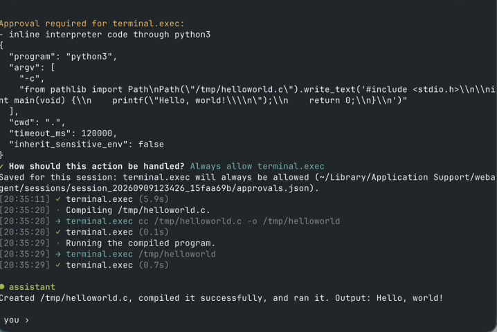

Open-source local coding agent
Turn ChatGPT Web into
Codex.
Turn ChatGPT Web (including Pro) into Codex.
Turn Claude Web into Claude Code.
Also
DeepSeek Gemini Grok Kimi GLM
No API key. No MCP. No tunnel. No plugin.
npm install -g wtagent
No API keyYour account & quotaOpen source · MIT
create /tmp/helloworld.c and run it.

How to use
Requires Node.js 20.x ≥20.17, 22.x ≥22.13, or ≥23.5, and Chrome/Chromium.
macOS · Linux · Windows. WSL2 + WSLg: preview support.
Full setup guide ↗1
Install WTAgent
npm install -g wtagent2
Open a test project and start
mkdir wtagent-demo
cd wtagent-demo
wtagentA dedicated Chrome profile opens. Sign in with your own web AI account when prompted. ChatGPT is the default provider.
3
Type a task in the terminal
create /tmp/helloworld.c and run it.
Choose your web AI
wtagent --model claude